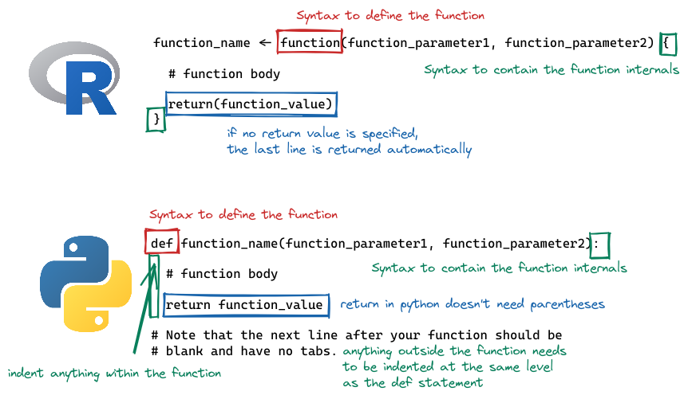
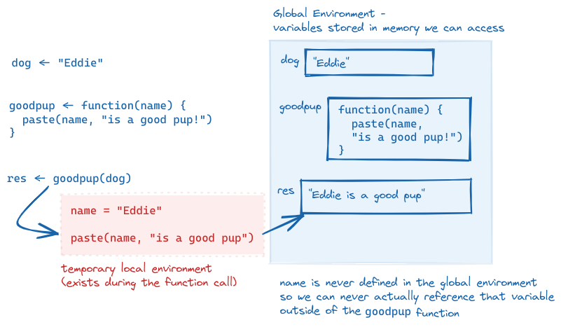
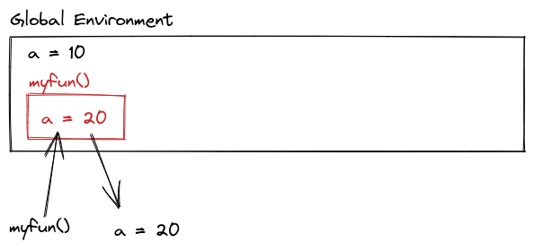
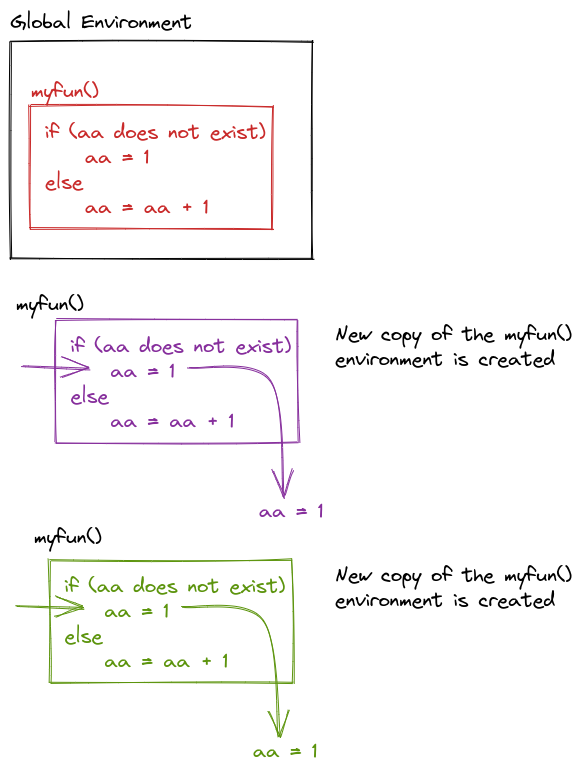
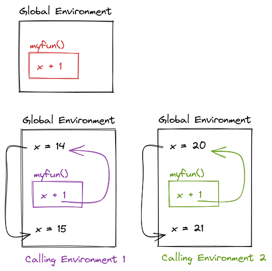

df <- tibble::tibble(
a = rnorm(10),
b = rnorm(10),
c = rnorm(10),
d = rnorm(10)
)
df$a <- (df$a - min(df$a, na.rm = TRUE)) /
(max(df$a, na.rm = TRUE) - min(df$a, na.rm = TRUE))
df$b <- (df$b - min(df$b, na.rm = TRUE)) /
(max(df$b, na.rm = TRUE) - min(df$a, na.rm = TRUE))
df$c <- (df$c - min(df$c, na.rm = TRUE)) /
(max(df$c, na.rm = TRUE) - min(df$c, na.rm = TRUE))
df$d <- (df$d - min(df$d, na.rm = TRUE)) /
(max(df$d, na.rm = TRUE) - min(df$d, na.rm = TRUE))9 Functions
A function is a set of actions that we group together and name. Throughout this course, you’ve used a bunch of different functions in R and python that are built into the language or added through packages: mean, ggplot, length, print. In this chapter, we’ll be writing our own functions.
9.1 When to write a function?
If you’ve written the same code (with a few minor changes, like variable names) more than twice, you should probably write a function instead. There are a few benefits to this rule:
Your code stays neater (and shorter), so it is easier to read, understand, and maintain.
If you need to fix the code because of errors, you only have to do it in one place.
You can re-use code in other files by keeping functions you need regularly in a file (or if you’re really awesome, in your own package!)
If you name your functions well, your code becomes easier to understand thanks to grouping a set of actions under a descriptive function name.
There is some extensive material on this subject in R for Data Science on functions. If you want to really understand how functions work in R, that is a good place to go.
This example is modified from R for Data Science (Wickham and Grolemund 2016, chap. 19).
What does this code do? Does it work as intended?
import pandas as pd
import numpy as np
df = pd.DataFrame({
'a': np.random.randn(10),
'b': np.random.randn(10),
'c': np.random.randn(10),
'd': np.random.randn(10)})
df.a = (df.a - min(df.a))/(max(df.a) - min(df.a))
df.b = (df.b - min(df.b))/(max(df.b) - min(df.a))
df.c = (df.c - min(df.c))/(max(df.c) - min(df.c))
df.d = (df.d - min(df.d))/(max(df.d) - min(df.d))The code rescales a set of variables to have a range from 0 to 1. But, because of the copy-pasting, the code’s author made a mistake and forgot to change an a to b.
Writing a function to rescale a variable would prevent this type of copy-paste error.
To write a function, we first analyze the code to determine how many inputs it has
df$a <- (df$a - min(df$a, na.rm = TRUE)) /
(max(df$a, na.rm = TRUE) - min(df$a, na.rm = TRUE))This code has only one input: df$a.
df.a = (df.a - min(df.a))/(max(df.a) - min(df.a))This code has only one input: df.a
To convert the code into a function, we first rewrite it using general names
In this case, it might help to replace df$a with x.
x <- df$a
(x - min(x, na.rm = TRUE)) /
(max(x, na.rm = TRUE) - min(x, na.rm = TRUE)) [1] 0.63687958 0.32947830 0.46515226 0.67807643 0.96173144 0.00000000
[7] 0.70847906 1.00000000 0.30353639 0.08412576In this case, it might help to replace df.a with x.
x = df.a
(x - min(x))/(max(x) - min(x))0 0.651443
1 0.666581
2 0.567101
3 0.690560
4 0.000000
5 0.576237
6 0.363609
7 0.842676
8 1.000000
9 0.359344
Name: a, dtype: float64Then, we make it a bit easier to read, removing duplicate computations if possible (for instance, computing min two times).
In R, we can use the range function, which computes the maximum and minimum at the same time and returns the result as c(min, max)
rng <- range(x, na.rm = T)
(x - rng[1])/(rng[2] - rng[1]) [1] 0.63687958 0.32947830 0.46515226 0.67807643 0.96173144 0.00000000
[7] 0.70847906 1.00000000 0.30353639 0.08412576In python, range is the equivalent of seq() in R, so we are better off just using min and max.
x = df.a
xmin, xmax = [x.min(), x.max()]
(x - xmin)/(xmax - xmin)0 0.651443
1 0.666581
2 0.567101
3 0.690560
4 0.000000
5 0.576237
6 0.363609
7 0.842676
8 1.000000
9 0.359344
Name: a, dtype: float64Finally, we turn this code into a function
rescale01 <- function(x) {
rng <- range(x, na.rm = T)
(x - rng[1])/(rng[2] - rng[1])
}
rescale01(df$a) [1] 0.63687958 0.32947830 0.46515226 0.67807643 0.96173144 0.00000000
[7] 0.70847906 1.00000000 0.30353639 0.08412576- The name of the function,
rescale01, describes what the function does - it rescales the data to between 0 and 1. - The function takes one argument, named
x; any references to this value within the function will usexas the name. This allows us to use the function ondf$a,df$b,df$c, and so on, withxas a placeholder name for the data we’re working on at the moment. - The code that actually does what your function is supposed to do goes in the body of the function, between
{and}(this is true in R, in python, there are different conventions, but the same principle applies) - The function returns the last value computed: in this case,
(x - rng[1])/(rng[2]-rng[1]). You can make this explicit by adding areturn()statement around that calculation.
def rescale01(x):
xmin, xmax = [x.min(), x.max()]
return (x - xmin)/(xmax - xmin)
rescale01(df.a)0 0.651443
1 0.666581
2 0.567101
3 0.690560
4 0.000000
5 0.576237
6 0.363609
7 0.842676
8 1.000000
9 0.359344
Name: a, dtype: float64The name of the function,
rescale01, describes what the function does - it rescales the data to between 0 and 1.The function takes one argument, named
x; any references to this value within the function will usexas the name. This allows us to use the function ondf.a,df.b,df.c, and so on, withxas a placeholder name for the data we’re working on at the moment.The code that actually does what your function is supposed to do goes in the body of the function, indented relative to the line with
def: function_name():. At the end of the function, you should have a blank line with no spaces or tabs.The function returns the value it is told to
return: in this case,(x - xmin)/(xmax - xmin). In Python, you mustreturna value if you want the function to perform a computation. 1
The process for creating a function is important: first, you figure out how to do the thing you want to do. Then, you simplify the code as much as possible. Only at the end of that process do you create an actual function.
9.2 Syntax

In R, functions are defined as other variables, using <-, but we specify the arguments a function takes by using the function() statement. The contents of the function are contained within { and }. If the function returns a value, a return() statement can be used; alternately, if there is no return statement, the last computation in the function will be returned.
In python, functions are defined using the def command, with the function name, parentheses, and the function arguments to follow. The first line of the function definition ends with a :, and all subsequent lines of the function are indented (this is how python knows where the end of the function is). A python function return statement is return <value>, with no parentheses needed.
Note that in python, the return statement is not optional. It is not uncommon to have python functions that don’t return anything; in R, this is a bit less common, for reasons we won’t get into here.
9.3 Arguments and Parameters
An argument is the name for the object you pass into a function.
A parameter is the name for the object once it is inside the function (or the name of the thing as defined in the function).
Let’s examine the difference between arguments and parameters by writing a function that takes a puppy’s name and returns “
dog <- "Eddie"
goodpup <- function(name) {
paste(name, "is a good pup!")
}
goodpup(dog)[1] "Eddie is a good pup!"In this example R function, when we call goodpup(dog), dog is the argument. name is the parameter.
dog = "Eddie"
def goodpup(name):
return name + " is a good pup!"
goodpup(dog)'Eddie is a good pup!'In this example python function, when we call goodpup(dog), dog is the argument. name is the parameter.
What is happening inside the computer’s memory as goodpup runs?

This is why the distinction between arguments and parameters matters. Parameters are only accessible while inside of the function - and in that local environment, we need to call the object by the parameter name, not the name we use outside the function (the argument name).
We can even call a function with an argument that isn’t defined outside of the function call: goodpup("Tesla") produces “Tesla is a good pup!”. Here, I do not have a variable storing the string “Tesla”, but I can make the function run anyways. So “Tesla” here is an argument to goodpup but it is not a variable in my environment.
This is a confusing set of concepts and it’s ok if you only just sort of get what I’m trying to explain here. Hopefully it will become more clear as you write more code.
Try it out
For each of the following blocks of code, identify the function name, function arguments, parameter names, and return statements. When the function is called, see if you can predict what the output will be.
def hello_world():
print("Hello World")hello_world()- Function name:
hello_world - Function parameters: none
- Function arguments: none
- Function output:
hello_world()Hello Worldmy_mean <- function(x) {
censor_x <- sample(x, size = length(x) - 2, replace = F)
mean(censor_x)
}set.seed(3420523)
my_mean(1:10)- Function name:
my_mean - Function parameters: x
- Function arguments: 1:10
- Function output: (varies each time the function is run unless you set the seed)
set.seed(3420523)
my_mean(1:10)[1] 69.3.1 Named Arguments and Parameter Order
In the examples above, you didn’t have to worry about what order parameters were passed into the function, because there were 0 and 1 parameters, respectively. But what happens when we have a function with multiple parameters?
divide <- function(x, y) {
x / y
}
def divide(x, y):
return x / yIn this function, the order of the parameters matters! divide(3, 6) does not produce the same result as divide(6, 3). As you might imagine, this can quickly get confusing as the number of parameters in the function increases.
In this case, it can be simpler to use the parameter names when you pass in arguments.
divide(3, 6)[1] 0.5divide(x = 3, y = 6)[1] 0.5divide(y = 6, x = 3)[1] 0.5divide(6, 3)[1] 2divide(x = 6, y = 3)[1] 2divide(y = 3, x = 6)[1] 2divide(3, 6)0.5divide(x = 3, y = 6)0.5divide(y = 6, x = 3)0.5divide(6, 3)2.0divide(x = 6, y = 3)2.0divide(y = 3, x = 6)2.0As you can see, the order of the arguments doesn’t much matter, as long as you use named arguments, but if you don’t name your arguments, the order very much matters.
9.4 Input Validation
When you write a function, you often assume that your parameters will be of a certain type. But you can’t guarantee that the person using your function knows that they need a certain type of input. In these cases, it’s best to validate your function input.
In R, you can use stopifnot() to check for certain essential conditions. If you want to provide a more illuminating error message, you can check your conditions using if() and then use stop("better error message") in the body of the if statement.
add <- function(x, y) {
x + y
}
add("tmp", 3)Error in x + y: non-numeric argument to binary operatoradd <- function(x, y) {
stopifnot(is.numeric(x))
stopifnot(is.numeric(y))
x + y
}
add("tmp", 3)Error in add("tmp", 3): is.numeric(x) is not TRUEadd(3, 4)[1] 7In Python, the easiest way to handle errors is to use a try statement, which operates rather like an if statement: if the statement executes, then we’re good to go; if not, we can use except to handle different types of errors. The else clause is there to handle anything that needs to happen if the statement in the try clause executes without any errors.
def add(x, y):
x + y
add("tmp", 3)Error in py_call_impl(callable, dots$args, dots$keywords): TypeError: can only concatenate str (not "int") to str
Detailed traceback:
File "<string>", line 1, in <module>
File "<string>", line 2, in adddef add(x, y):
try:
return x + y
except TypeError:
print("x and y must be add-able")
else:
# We should never get here, because the try clause has a return statement
print("Else clause?")
return
add("tmp", 3)x and y must be add-ableadd(3, 4)7You can read more about error handling in Python here
Input validation is one aspect of defensive programming - programming in such a way that you try to ensure that your programs don’t error out due to unexpected bugs by anticipating ways your programs might be misunderstood or misused. If you’re interested, Wikipedia has more about defensive programming.
9.5 Scope
When talking about functions, for the first time we start to confront a critical concept in programming, which is scope. Scope is the part of the program where the name you’ve given a variable is valid - that is, where you can use a variable.
A variable is only available from inside the region it is created.
What do I mean by the part of a program? The lexical scope is the portion of the code (the set of lines of code) where the name is valid.
The concept of scope is best demonstrated through a series of examples, so in the rest of this section, I’ll show you some examples of how scope works and the concepts that help you figure out what “scope” actually means in practice.
9.5.1 Name Masking
Scope is most clearly demonstrated when we use the same variable name inside and outside a function. Note that this is 1) bad programming practice, and 2) fairly easily avoided if you can make your names even slightly more creative than a, b, and so on. But, for the purposes of demonstration, I hope you’ll forgive my lack of creativity in this area so that you can see how name masking works.
What does this function return, 10 or 20?
a = 10
myfun = function() {
a = 20
return a
}
myfun()
a <- 10
myfun <- function() {
a <- 20
a
}
myfun()[1] 20
a = 10
def myfun():
a = 20
return a
myfun()20The lexical scope of the function is the area that is between the braces (in R) or the indented region (in python). Outside the function, a has the value of 10, but inside the function, a has the value of 20. So when we call myfun(), we get 20, because the scope of myfun is the local context where a is evaluated, and the value of a in that environment dominates.
This is an example of name masking, where names defined inside of a function mask names defined outside of a function.
9.5.2 Environments and Scope
Another principle of scoping is that if you call a function and then call the same function again, the function’s environment is re-created each time. Each function call is unrelated to the next function call when the function is defined using local variables.
myfun = function() {
if a is not defined
a = 1
else
a = a + 1
}
myfun()
myfun()
What does this output?

myfun <- function() {
if (!exists("aa")) {
aa <- 1
} else {
aa <- aa + 1
}
return(aa)
}
myfun()[1] 1myfun()[1] 1def myfun():
try: aa
except NameError: aa = 1
else: aa = aa + 1
return aa
myfun()1myfun()1Note that the try command here is used to handle the case where a doesn’t exist. If there is a NameError (which will happen if aa is not defined) then we define aa = 1, if there is not a NameError, then aa = aa + 1.
This is necessary because Python does not have a built-in way to test if a variable exists before it is used.
9.5.3 Dynamic Lookup
Scoping determines where to look for values – when, however, is determined by the sequence of steps in the code. When a function is called, the calling environment (the global environment or set of environments at the time the function is called) determines what values are used.
If an object doesn’t exist in the function’s environment, the global environment will be searched next; if there is no object in the global environment, the program will error out. This behavior, combined with changes in the calling environment over time, can mean that the output of a function can change based on objects outside of the function.
myfun = function() x + 1
x = 14
myfun()
x = 20
myfun()
What will the output be of this code?

myfun <- function() {
x + 1
}
x <- 14
myfun()[1] 15x <- 20
myfun()[1] 21
def myfun():
return x + 1
x = 14
myfun()15x = 20
myfun()219.5.4 Try It Out
What does the following function return? Make a prediction, then run the code yourself. (Taken from (Wickham 2015, chap. 6))
f <- function(x) {
f <- function(x) {
f <- function() {
x ^ 2
}
f() + 1
}
f(x) * 2
}
f(10)f <- function(x) {
f <- function(x) {
f <- function() {
x ^ 2
}
f() + 1
}
f(x) * 2
}
f(10)[1] 202def f(x):
def f(x):
def f():
return x ^ 2
return f() + 1
return f(x) * 2
f(10)def f(x):
def f(x):
def f():
return x ** 2
return f() + 1
return f(x) * 2
f(10)2029.6 Debugging
Now that you’re writing functions, it’s time to talk a bit about debugging techniques. This is a lifelong topic - as you become a more advanced programmer, you will need to develop more advanced debugging skills as well (because you’ll become more adept at screwing things up).

Let’s start with the basics: print debugging.
9.6.1 Print Debugging
This technique is basically exactly what it sounds like. You insert a ton of print statements to give you an idea of what is happening at each step of the function.
Let’s try it out on the previous try it out example (see what I did there?)
Note that I’ve modified the code slightly so that we store the value into retval and then return it later - this allows us to see the code execution without calling functions twice (which would make the print output a bit more confusing).
f <- function(x) {
print ("Entering Outer Function")
print (sprintf("x = %0.2f", x))
f <- function(x) {
print ("Entering Middle Function")
print (sprintf("x = %0.2f", x))
f <- function() {
print ("Entering Inner Function")
print (sprintf("x = %0.2f", x))
print (sprintf("Inner Function: Returning %0.2f", x^2))
x ^ 2
}
retval <- f() + 1
print (sprintf("Middle Function: Returning %0.2f", retval))
retval
}
retval <- f(x) * 2
print (sprintf("Outer Function: Returning %0.2f", retval))
retval
}
f(10)[1] "Entering Outer Function"
[1] "x = 10.00"
[1] "Entering Middle Function"
[1] "x = 10.00"
[1] "Entering Inner Function"
[1] "x = 10.00"
[1] "Inner Function: Returning 100.00"
[1] "Middle Function: Returning 101.00"
[1] "Outer Function: Returning 202.00"[1] 202def f(x):
print("Entering Outer function, x = " + str(x))
def f(x):
print("Entering Middle function, x = " + str(x))
def f():
print("Entering Inner function, x = " + str(x))
print("Inner Function: Returning " + str(x ** 2))
return x ** 2
retval = f() + 1
print("Middle Function: Returning " + str(retval))
return retval
retval = f(x) * 2
print("Outer Function: Returning " + str(retval))
return retval
f(10)Entering Outer function, x = 10
Entering Middle function, x = 10
Entering Inner function, x = 10
Inner Function: Returning 100
Middle Function: Returning 101
Outer Function: Returning 202
202Note that Python has a logging module that may make it easier to print out things (and to filter the debug print statements from other reasonable program output.) You can see an example of this on Rosetta Code.
9.6.2 General Debugging Strategies
Debugging: Being the detective in a crime movie where you are also the murderer. - some t-shirt I saw once
The overall process is well described in Advanced R by H. Wickham2; I’ve copied it here because it’s such a succinct distillation of the process, but I’ve adapted some of the explanations to this class rather than the original context of package development.
Realize that you have a bug
Google! In R you can automate this with the
erroristandsearcherpackages, but general Googling the error + the programming language + any packages you think are causing the issue is a good strategy.Make the error repeatable: This makes it easier to figure out what the error is, faster to iterate, and easier to ask for help.
- Use binary search (remove 1/2 of the code, see if the error occurs, if not go to the other 1/2 of the code. Repeat until you’ve isolated the error.)
- Generate the error faster - use a minimal test dataset, if possible, so that you can ask for help easily and run code faster. This is worth the investment if you’ve been debugging the same error for a while.
- Note which inputs don’t generate the bug – this negative “data” is helpful when asking for help.
Figure out where it is. Debuggers may help with this, but you can also use the scientific method to explore the code, or the tried-and-true method of using lots of
print()statements.Fix it and test it. The goal with tests is to ensure that the same error doesn’t pop back up in a future version of your code. Generate an example that will test for the error, and add it to your documentation.
There are several other general strategies for debugging:
Retype (from scratch) your code
This works well if it’s a short function or a couple of lines of code, but it’s less useful if you have a big script full of code to debug. However, it does sometimes fix really silly typos that are hard to spot, like having typed<--instead of<-in R and then wondering why your answers are negative.Visualize your data as it moves through the program. This may be done using
print()statements, or the debugger, or some other strategy depending on your application.Tracing statements. Again, this is part of
print()debugging, but these messages indicate progress - “got into function x”, “returning from function y”, and so on.Rubber ducking. Have you ever tried to explain a problem you’re having to someone else, only to have a moment of insight and “oh, never mind”? Rubber ducking outsources the problem to a nonjudgmental entity, such as a rubber duck3. You simply explain, in terms simple enough for your rubber duck to understand, exactly what your code does, line by line, until you’ve found the problem. A more thorough explanation can be found at gitduck.com.
Do not be surprised if, in the process of debugging, you encounter new bugs. This is a problem that’s well-known enough that it has its own t-shirt, in addition to an xkcd comic. At some point, getting up and going for a walk may help. Redesigning your code to be more modular and more organized is also a good idea.
{kind=link}
These next two sections are included as FYI, but you don’t have to read them just now. They’re important, but not urgent, if that makes sense.
9.6.3 Dividing Problems into Smaller Parts
“Divide each difficulty into as many parts as is feasible and necessary to resolve it.” -René Descartes, Discourse on Method
In programming, as in life, big, general problems are very hard to solve effectively. Instead, the goal is to break a problem down into smaller pieces that may actually be solveable.
We’ll start with a non-programming example:
General problem statement : “I’m exhausted all the time”
Ok, so this is a problem that many of us have from time to time (or all the time). If we get a little bit more specific at outlining the problem, though, we can sometimes get a bit more insight into how to solve it.Specific problem statement: “I wake up in the morning and I don’t have any energy to do anything. I want to go back to sleep, but I have too much to do to actually give in and sleep. I spend my days worrying about how I’m going to get all of the things on my to-do list done, and then I lie awake at night thinking about how many things there are to do tomorrow. I don’t have time for hobbies or exercise, so I drink a lot of coffee instead to make it through the day.”
This is a much more specific list of issues, and some of these issues are actually things we can approach separately.Separating things into solvable problems:
Moving through the list above, we can isolate a few issues. Some of these issues are undoubtedly related to each other, but we can approach them separately (for the most part).- Poor quality sleep (tired in the morning, lying awake at night)
- Too many things to do (to-do list)
- Chemical solutions to low energy (coffee during the day)
- Anxiety about completing tasks (worrying, insomnia)
- Lack of personal time for hobbies or exercise
Brainstorm Solutions:
- Get a check-up to rule out any other issues that could cause sleep quality degradation - depression, anxiety, sleep apnea, thyroid conditions, etc.
- Ask the doctor about taking melatonin supplements for a short time to ensure that sleep starts off well (note, don’t take medical advice from a stats textbook!)
- Reformat your to-do list:
- Set time limits for things on the to-do list
- Break the to-do list into smaller, manageable tasks that can be accomplished within a relatively short interval - such as an hour
- Sort the to-do list by priority and level of “fun” so that each day has a few hard tasks and a couple of easy/fun tasks. Do the hard tasks first, and use the easy/fun tasks as a reward.
- Set a time limit for caffeine (e.g. no coffee after noon) so that caffeine doesn’t contribute to poor quality sleep
- Address anxiety with medication (from 1), scheduled time for mindfulness meditation, and/or self-care activities
- Scheduling time for exercise/hobbies
- scheduling exercise in the morning to take advantage of the endorphins generated by working out
- scheduling hobbies in the evening to reward yourself for a day’s work and wind down work well before bedtime
- Get a check-up to rule out any other issues that could cause sleep quality degradation - depression, anxiety, sleep apnea, thyroid conditions, etc.
Approach each sub-problem separately
When the sub-problem has a viable solution, move on to the next sub-problem. Don’t try to tackle everything at once. Here, that might look like this list, where each step is taken separately and you give each thing a few days to see how it affects your sleep quality. In programming, of course, this list would perhaps be a bit more sequential, but real life is messy and the results take a while to populate.
- [1] Make the doctor’s appointment.
- [5] While waiting for the appointment, schedule exercise early in the day and hobbies later in the day to create a “no-work” period before bedtime.
- [1] Go to the doctor’s appointment, follow up with any concerns.
- [1] If doctor approves, start taking melatonin according to directions
- [2] Work on reformatting the to-do list into manageable chunks. Schedule time to complete chunks using your favorite planning method.
- [4] If anxiety is still an issue after following up with the doctor, add some mindfulness meditation or self-care to the schedule in the mornings or evenings.
- [3] If sleep quality is still an issue, set a time limit for caffeine
- [2] Revise your to-do list and try a different tactic if what you were trying didn’t work.
Here’s another example of how to break down a real-world personal problem in programming/debugging style.
9.6.4 Minimal Working (or Reproducible) Examples
If all else has failed, and you can’t figure out what is causing your error, it’s probably time to ask for help. If you have a friend or buddy that knows the language you’re working in, by all means ask for help sooner - use them as a rubber duck if you have to. But when you ask for help online, often you’re asking people who are much more knowledgeable about the topic - members of R core and the people who developed NumPy and Pandas browse stackoverflow and may drop in and help you out. Under those circumstances, it’s better to make the task of helping you as easy as possible because it shows respect for their time. The same thing goes for your supervisors and professors.

There is also a reprexpy package in python, but it doesn’t have nearly as nice of an illustration to go with it.
So, with that said, there are numerous resources for writing what’s called a “minimal working example”, “reproducible example” (commonly abbreviated reprex), or MCVE (minimal complete verifiable example). Much of this is lifted directly from the StackOverflow post describing a minimal reproducible example.
The goal is to reproduce the error message with information that is
- minimal - as little code as possible to still reproduce the problem
- complete - everything necessary to reproduce the issue is contained in the description/question
- reproducible - test the code you provide to reproduce the problem.
You should format your question to make it as easy as possible to help you. Make it so that code can be copied from your post directly and pasted into a terminal. Describe what you see and what you’d hope to see if the code were working.
Other resources: - reprex package: Do’s and Don’ts - How to use the reprex package - vignette with videos from Jenny Bryan - reprex magic - Vignette adapted from a blog post by Nick Tierney - reprexpy package
Footnotes
This is not strictly true, you can of course use pass-by-reference, but we will not be covering that in this class as we are strictly dealing with the bare minimum of learning how to write a function here.↩︎
the 0th step is from the 1st edition, the remaining steps are from the 2nd.↩︎
Some people use cats, but I find that they don’t meet the nonjudgmental criteria. Of course, they’re equally judgmental whether your code works or not, so maybe that works if you’re a cat person, which I am not. Dogs, in my experience, can work, but often will try to comfort you when they realize you’re upset, which both helps and lessens your motivation to fix the problem. A rubber duck is the perfect dispassionate listener.↩︎